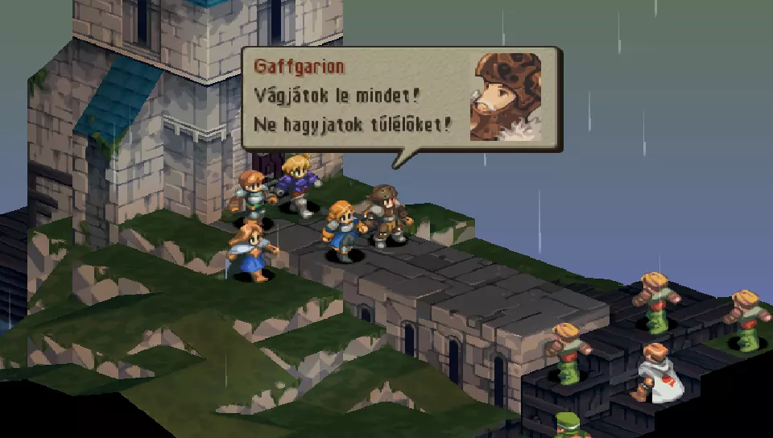
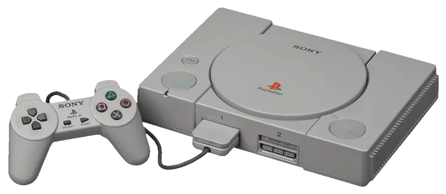
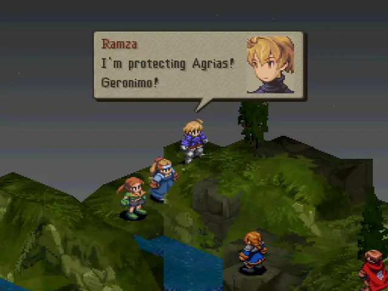
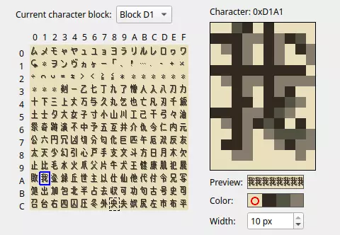
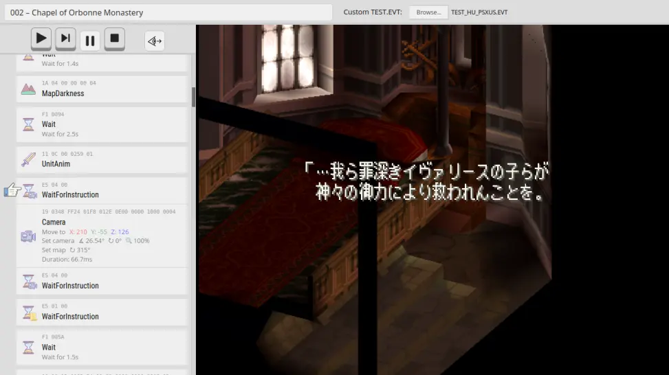
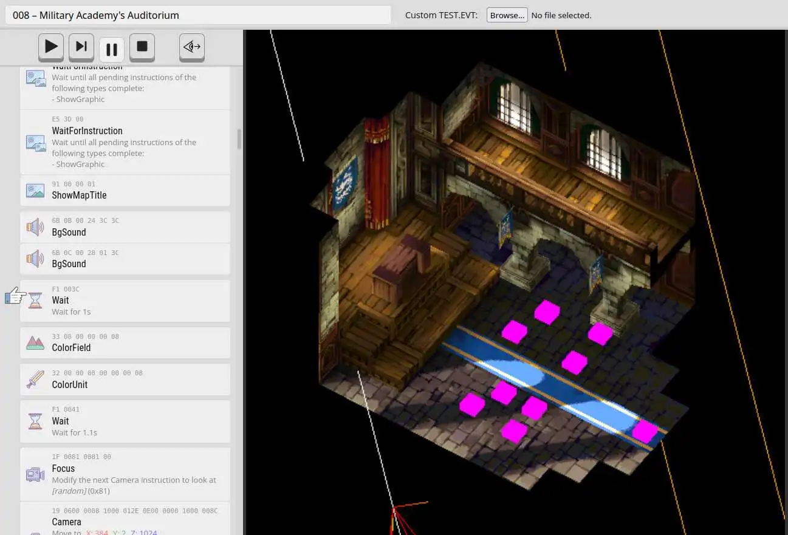
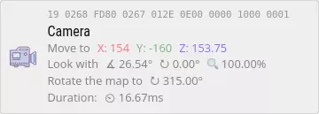
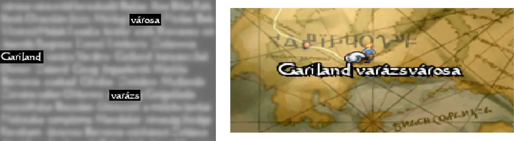
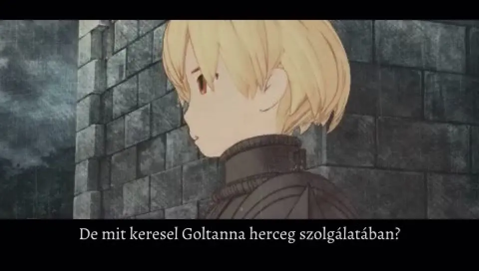
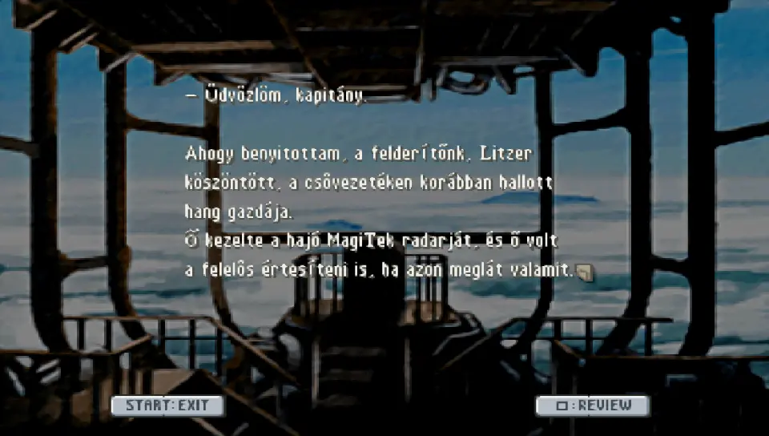

Van úgy, hogy az ember befejez egy játékot, és érzi, hogy igen, ezt valakinek egyszer le kell fordítania magyarra. A lelkesedés persze legtöbbször csak fellángolás, de van, amikor éveken át kitart, egészen a célvonalig. Engem a Final Fantasy Tactics‑szal hozott össze így a sors.
Mielőtt elmerülnénk a részletekben, egy kis háttér-információ. Az FFT eredetileg 1997‑ben jelent meg PlayStation 1‑re; a százgigás játékok korában már furcsa belegondolni, de ennek a gépnek konkrétan 2 (kettő) MB memóriája volt, plusz 1 MB az összes épp látható grafikus elemnek. Később majd látni fogjuk, hány helyen is köszön ez vissza a játék felépítésében.

Tíz évvel később a játék kapott egy PSP‑s portot is, és ugyanez került tovább mobilokra is; ez lényegében megegyezik az eredetivel, ám egyes jelenetek átvezető videót kaptak, összecsaphatunk a barátainkkal, és néhány vendégszereplővel is találkozhatunk az út során.
A PS1‑es korszakban a fordítás és a minőség-ellenőrzés még némileg gyerekcipőben járt, és ez meg is látszik a mai szemmel rémes, és sokszor hibáktól hemzsegő szövegeken. A PSP‑s változat egy új, már jóval színvonalasabb fordítást is kapott, a karaktereink nem csak helyesen, de a világhoz illő stílusban is szólalnak meg. Sajnos a fordítók kicsit át is estek a ló túloldalára, a nyelvezet néhol az olvashatóság kárára történik, és bizonyos „áthallásos” utalások is némileg tompítva lettek.

Ami mindkét fordításra igaz viszont, hogy a szöveg egy jelentős része egyszerűen hiányzik. A japán változatban négy olvasható, interaktív könyvet lehet összegyűjteni, amik a teljes játék szövegének kb. 15%-át tartalmazzák. Ezeket az angol változatban kikapcsolták és hivatalosan sosem fordították le.
A fentiek miatt a fordítás elsősorban az eredeti japán szöveg alapján készült, a PSP‑s változatot megcélozva. Tervben volt, hogy PS1‑re is elkészítem, de végül memóriakorlátozások miatt (lásd később) ezt egyelőre inkább jegeltem.
Ugye az ember általában azzal kezd egy ilyen projektet, hogy szétnéz az elérhető programok között, amivel belenyúlhat a játékba. A közösség pedig még ma is kifejezetten aktív a játék körül, fordítást azonban eddig nem sokan csináltak; és bár vannak programok arra, hogy az ember átírjon pár szöveget, arra azonban ezek messze nem voltak kényelmesek, hogy egy teljes körű honosítást csináljon velük az ember.
Az évtizedek alatt felhalmozott tudás viszont rendkívül hasznosnak bizonyult később saját programok írásához. Vessünk is akkor egy pillantást a lemezekre.
Fentebb említettem, hogy PS1‑en a memória erősen korlátozott; ezt a játékok általában úgy oldották meg, hogy menet közben a lemezről töltögették ki-be a játék kódját. PS1‑en így találunk is jó pár fájlt, ezek között pedig lesz majd egy erős átfedés a szövegben. PSP‑n viszont a videókon kívül mindössze két lényeges fájlt találunk, magát a kódot és az egész lemez tartalmát egyetlen adatfájlba nyomva. Ha az utóbbihoz írunk egy kicsomagolót, azt látjuk, hogy fájlnevek egyáltalán nincsenek benne. Szerencsére a tartalom nagyrészt megegyezik a PS1‑es lemezzel, ez alapján pedig a többségéről ki lehet találni, mi célt szolgál.
Ha megvannak fájljaink, akkor nézzük a szöveget. A fordításhoz szükségem volt az eredi japán szöveg tipográfiailag korrekt exportálására: amikor egy rossz ecsetvonás megváltoztatja a szó jelentését, bizony oda kell figyelni, hogy az a 10x10 pixeles karakter mégis mi akar lenni. A lefordított szöveget ezután valahogy vissza is kell írni, és persze egy magyar ábécére is szükség lesz.
’97‑ben az Unicode szabvány messze nem volt annyira elterjedt, főleg keleten, és így a játékok is hajlamosak voltak mindenféle egyedi megoldásokat használni. Itt sincs másképp, a szövegek egy egyedi, kb. 2200 karakteres ábécét használnak, olyan kódolással, ami még az ASCII‑t sem követi. Ha ez nem volna elég, a különféle kiadásai a játéknak különböző kódolást használnak, továbbá a szövegek egy részén tömörítés is van. Bizonyos szövegrészek be vannak égetve a játék memóriájába, máshol az adott fájl nem lépheti át a lemez fizikai szektorméretét. A karakterszám tehát erősen kötött, és nem csak bájtban mérve: a szöveget kézzel kellett sorokba tördelni, és ha a magyar szöveg túl széles és lelóg a képernyőről, vagy több sora van, mint amennyit a játék vár, akkor nemes egyszerűséggel kifagy a játék az adott jelenetnél.
Ha már szóba került az ábécé, ez egy nagy textúra, beégetve a memóriába, rajta apró kockákban a betűk. Mivel a játék nem követ semmilyen szabványos karakterkódolást, nekünk kell megmondanunk, hogy az egyes kis rajzok melyik betűt jelképezik az adott játékváltozatnál. Ez egyfajta párhuzamos munkát eredményezett: a jól látható betűk alapján ki tudtam exportálni valamennyi szöveget, ebből ki lehetett találni néhány kétes karaktert, amivel ismét újabb szövegeket tudtam exportálni, míg végül meg nem lett az egész szöveg.

Van még egy érdekes tulajdonsága a szövegeknek: a játék során a szereplők szövegbuborékokban beszélnek, és ennek a mérete nem az aktuális szöveghez illeszkedik, hanem az összes sorhoz, amit a karakter az adott buborékban mond. Azaz ha szép eredményt akarunk, tudnunk kell, ki, mikor, mekkora szövegbuborékban melyik szövegeket mondja, és úgy tördelni, hogy ezek mindegyike egyenletesen töltse ki a buborékot. Bár ilyesmivel hivatalos fordításban sem törődnek mindig (lásd GameBoy‑os Fire Emblemek például), az ilyesmit azért meglátja az ember.
No de hogyan próbáljuk ki az összes létező szöveget? Mivel egy 40+ órás játékról beszélünk, ahol a döntéseink befolyásolhatják a párbeszédet, hagyományos módszerrel száz órákat el lehetett volna tölteni az összes döntési ág bejárásával. Gyorsabb (és érdekesebb) volt írni inkább egy mini emulátort a jelenetek bináris kódjához, amivel egyrészt azonnal láttam, melyik szöveg hol van és mekkora, másrészt pár kattintással tudtam a jelenetek között ugrálni, ami jelentősen gyorsította a munkát.


(A bináris kódot úgy kell elképzelni, mint bájtok sorozatát, amik egy-egy parancsot jelentenek, például hogy hogyan forogjon a kamera egy párbeszéd során a karakterek körül. Ezeket „játssza le” később egymás után a játék.)

Az érdekes karakterkódolás mellett régebbi játékoknál a másik gyakori jelenség, hogy a szöveg jelentős része grafikus elem, azaz egy textúrára előre meg van rajzolva. Nehezítésképp itt a játék szinte minden része egyedi textúra formátumot vagy egyedi palettát használ:

Hogy a játék melyik textúráról honnan vág ki egy darabot és hova rajzolja, az persze a játék kódjába van beégetve. Sok helyen ezt sikerült módosítani, máshol nem; itt tehát a magyar szövegnek pixelre pontosan bele kellett férnie az eredeti szöveg helyére.
Ha már vizuális elemek, nézzük a videókat. A PS1‑es változatban ebből nincs sok, PSP‑n viszont jó pár fontosabb jelenet kapott egyet. A japán változatban nincs szinkron, a szereplőink háttérzajok mellett tátognak, ami kissé különös hatást kelt, de bizonyára meg lehet szokni. Az angol szöveg azonban, és így a szinkron is, nem mindenhol követi szorosan az eredetit, ezért úgy kellett igazítani a szöveget is, hogy a beszéd ritmusához igyekezzen illeszkedni.
A másik probléma, hogy néhány átvezetőnél a videóképre van égetve a felirat (és nem az alatta lévő fekete sávra). Itt a japán forrást sem lehetett egy az egyben használni, mert ott pedig tört angolsággal irkáltak a videóra; ezeket letakarítani a képkockákról elég időigényesnek bizonyult, de szerencsére nem sok ilyen videó volt végül.

Többször említettem, hogy a játék memóriájába és kódjába kellett belenyúlni. Bizonyos paraméterek egyszerűen beégetett értékek a játékban, és nem követik a szöveg szélességét. Ilyen például az összes menü és felugró üzenet szélessége; ha túl sok a szöveg, jobb esetben egy kicsit kilóg, rosszabb esetben eltűnik a többi szöveg vagy kifagy a játék. Nem mindenütt sikerült módosítani ezeket az értékeket, és nem is mindig egyértelmű, hogy melyik szövegdobozban épp melyik szöveget használja a játék, de amit megtaláltam, azt a szöveghez igazítottam.
Két másik helyen lett még belenyúlva a kódba. Az egyik a PSP‑s „belassulás” javítása: mikor egy varázslatot vagy képességet használsz PSP‑n, a játék belassul (gyárilag, bármilyen módosítás nélkül, valódi PSP‑n). Egyszerűen rosszul van megírva itt a játék, de szerencsére a közösség megtalálta rá a megoldást, és ezt a fordítás is tartalmazza.
A másik módosítás az olvasható könyvek bekapcsolása. Ahogy a bevezetőben írtam, a japán változatban négy olvasható, interaktív könyvet lehet összegyűjteni, amiket az angol változatban egyszerűen letiltottak. A honosítás mind a négyet visszakapcsolja és olvashatóvá teszi, immár magyarul. Angolul egyébként az első háromhoz készült rajongói fordítás még évekkel ezelőtt, de a negyedikhez valamiért nem, így úgy adódott, hogy ahhoz az angol fordítást is én csináltam végül.

Legutolsónak még egy apróság volt hátra, a PSP‑s változatból ugyanis készült egy amerikai és egy európai kiadás is. Különbség a tartalomban nincs, de a játék egyedi azonosítója eltér a binárisokban, ezért hozzá kellett igazítanom a fordítás fájljait is.
Sokat lehetne még írni, de azt hiszem, már így is hosszúra nyúlt ez a cikk. Valahogy sikerül mindig olyan játékba botlani, aminek a fordítása még elég sok fejlesztői munkát is igényel (lásd What Remains of Edith Finch vagy épp FEZ). Ám mikor ezek végre elkészülnek, elégedetten dőlhet hátra az ember: ez is meg lett csinálva.
A Final Fantasy Tactics fordítása a PSP‑s változathoz immár elérhető a letöltések között, mind az amerikai, mind az európai változathoz. Jó játékot!
Mustoha Mátyás
2023. augusztus